VOLKSWAGEN PASSAT ALLTRACK – Przestronne i wszechstronne kombi z 2018 roku, idealne dla osób ceniących komfort oraz nowoczesne rozwiązania. Samochód wyróżnia się bogatym wyposażeniem oraz zaawansowanymi systemami bezpieczeństwa. Wersja Alltrack zapewnia pewność prowadzenia w różnych warunkach drogowych.
Bardzo dobra wersja napedowa, silnik 2.0 TSI o oznaczeniu CHHB oraz 7 biegowa najmocniejsza skrzynia DQ500 ( skrzynia po 2 wymiana olejow ( przy ~60 tys oraz 127000 km)
Auto w moim posiadaniu od listopada 2024 , kupilem z przebiegiem 110 tys KM, jestem drugim wlascicielem
Auto pochodzi z polskiego salonu.
W tej chwili przebieg 174000 i rosnie, auto w ciaglym uzytkowaniu
AUto regularnie serwisowane , wymiana oleju co max 15000 , do 90000 serwisowane w ASO
Ostatnie serwisy, poza olejem silnikowym ktore wykonalem za mojego posiadania
127000 wymiana olejow w skrzyni,dyfrach, haldex , skrzynia katowa, , wymiana odmy , swiec oraz pokrywy rozrzadu
164000 wymiana tarcz i klockow przod
Na aucie opony wielosezonowe Kleber Quadraxer DOT 2025
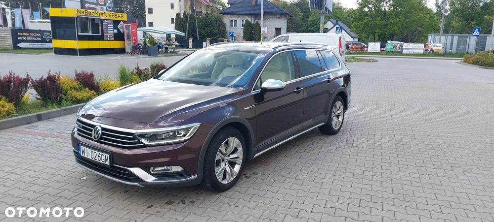
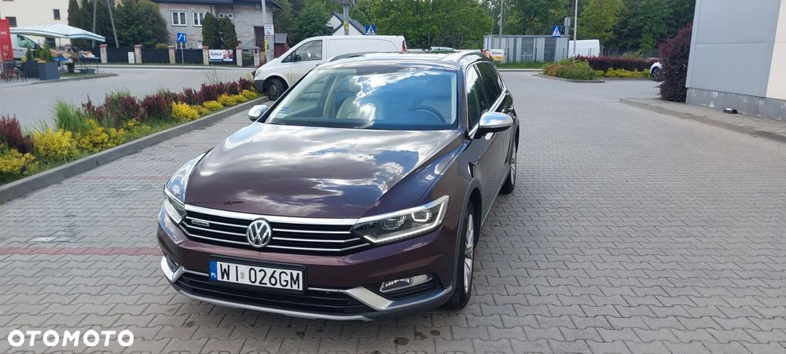
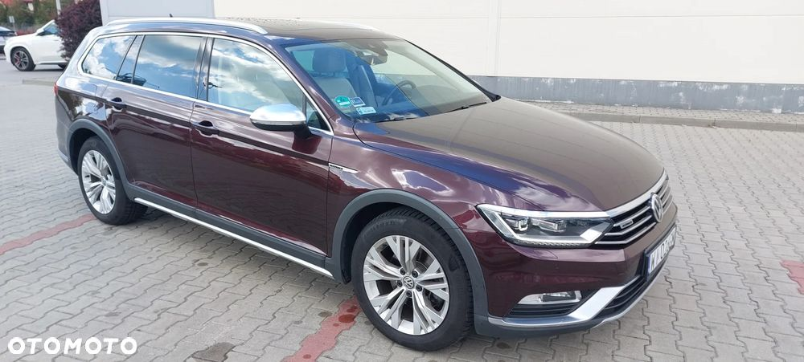
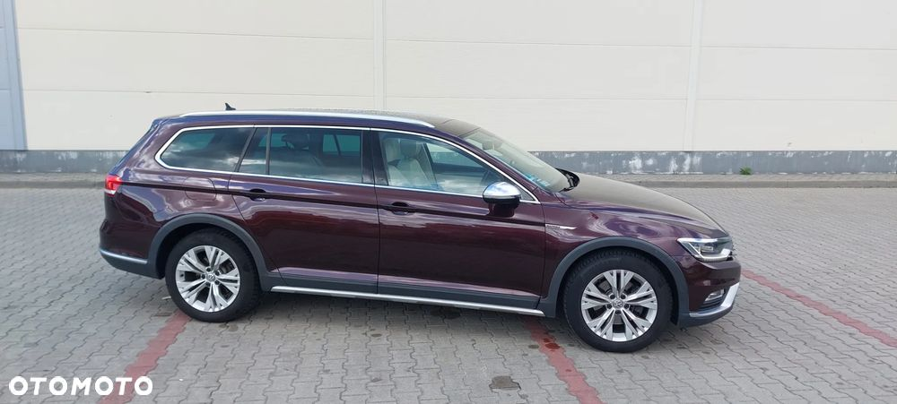
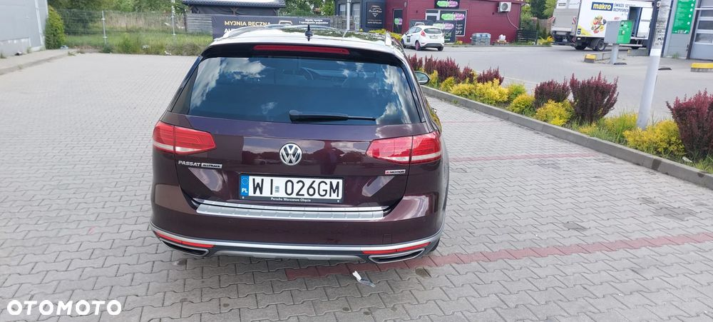
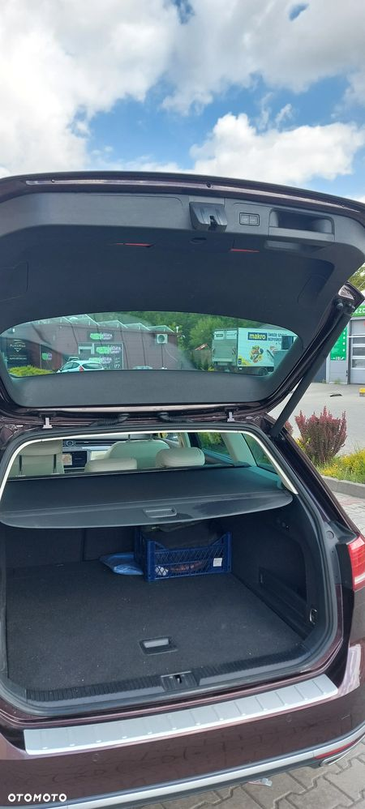
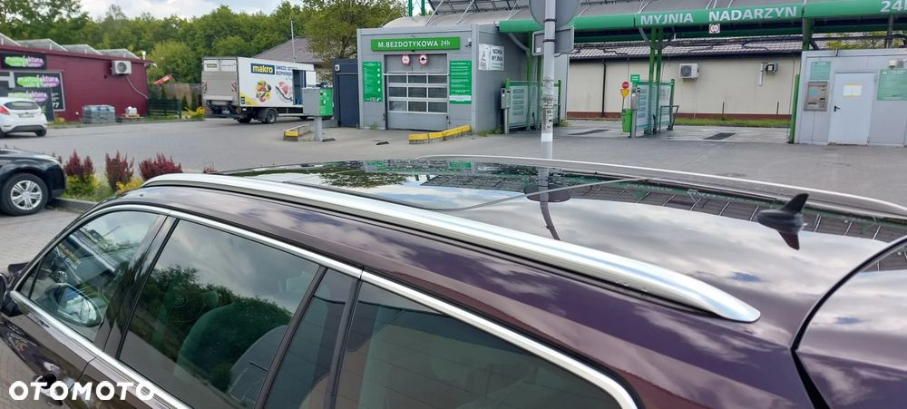
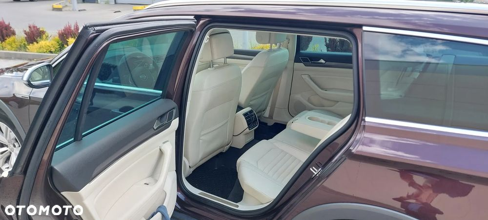
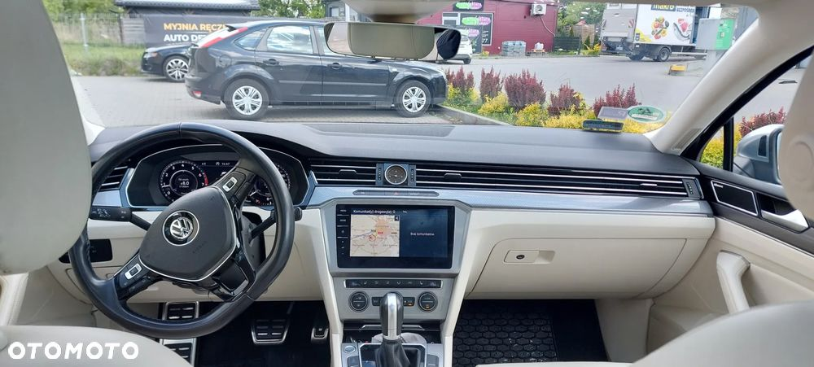
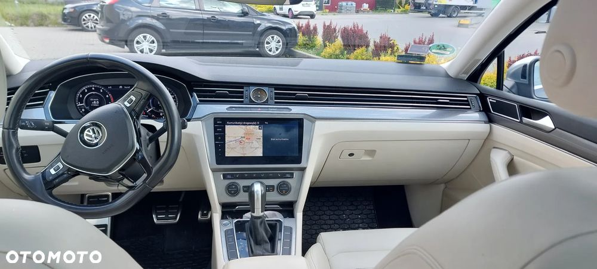
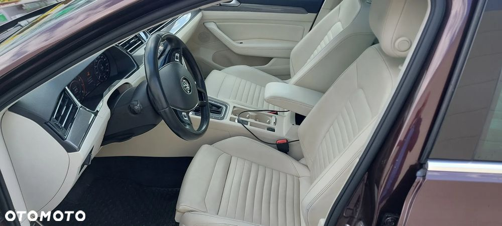
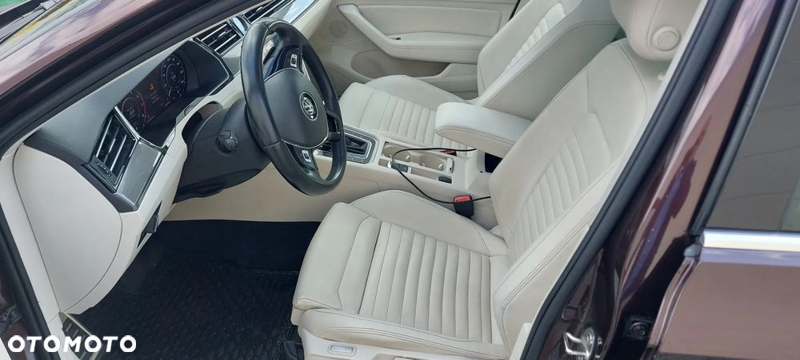
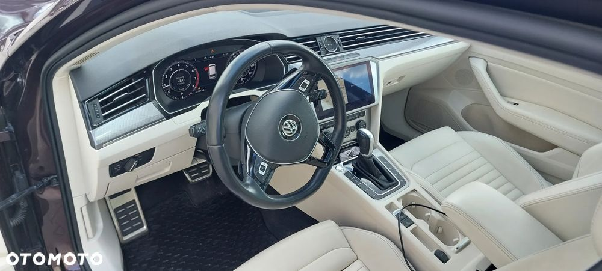
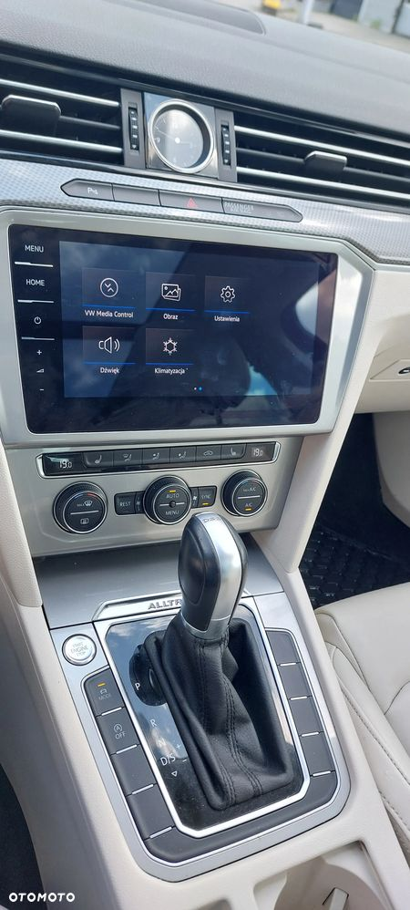
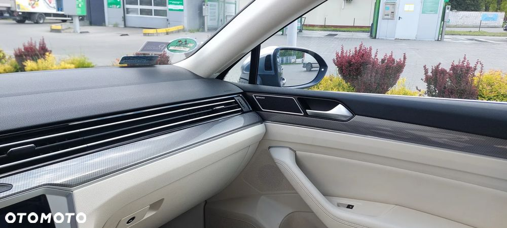
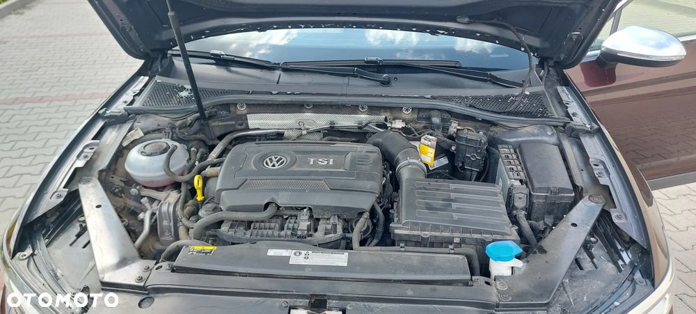